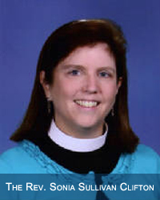

Meet the Staff
Pastor Sonia has a zeal for helping others find their place in God's world. She enjoys the opportunity to walk with others in their life’s journey, and especially helping them to find Christ along the way.
Pastor Sonia comes to us from Trinity Preparatory School in Winter Park, where she has served as a Chaplain, and from Christ the King Church where she served as the Associate Rector, both since 2003. Her community involvement includes volunteer work with Habitat for Humanity, KidsGames, Relay for Life and many others. She has a passion for mission work, both at home and abroad. Her other loves (and entertainment) are her husband, Steve (the Rector of Christ the King Church), her son Christopher (a junior at FSU), her stepdaughter Catherine (a junior at the University of the South), her “pseudo-children” (the young adults God seems always to be bringing into her life to raise), and Walt Disney World. Take a peek at her office and you'll discover her infatuation with Mickey Mouse; and if you ask, you'll hear the cool story behind it too!
Before moving to Orlando, she served for ten years in Swainsboro, Georgia. Her major responsibility there was serving as the rector of Good Shepherd Episcopal Church and in several diocesan leadership capacities. She led a community-wide youth ministry program called CrossRoads and was a part of many community outreach organizations. She served on the Board of Directors for the Rotary Club and the Sunshine House Children's Advocacy Center, led Youth Leadership Emanuel, was one of the County Chairs for Relay for Life, and served on the Community Involvement Committee for the public school system.
Pastor Sonia was born and raised in Savannah, Georgia, received her BBA ('84) and MBA ('89) degrees from Valdosta State University and her M.Div. ('93) from the University of the South (Sewanee). Outside of professional ministry, her work experience is rooted in management and marketing, mainly for non-profit organizations.